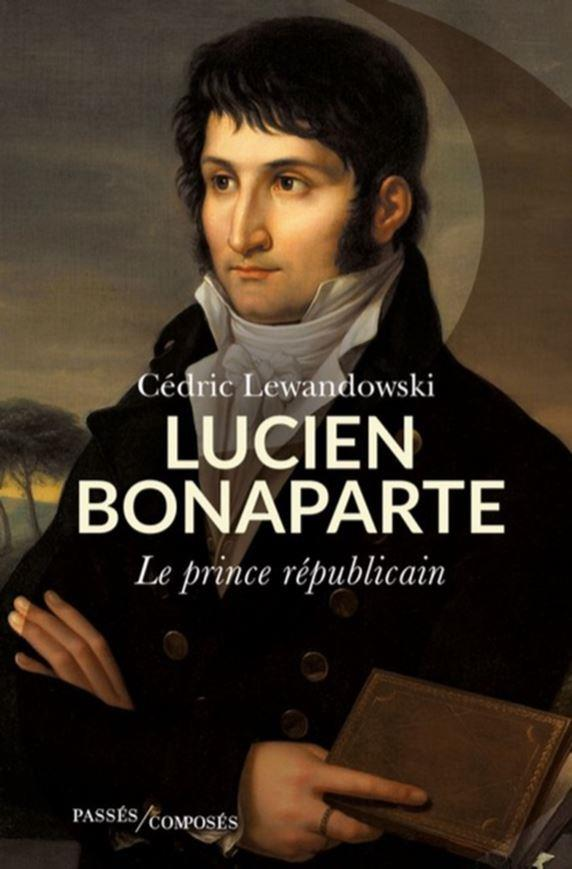
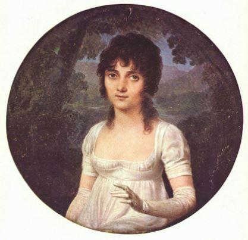
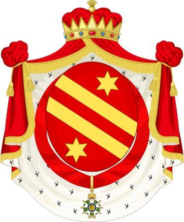

Cédric Lewandowski est diplômé de l’Institut d’Études Politiques de Paris et de l’université Paris VIII. Il a été directeur du cabinet civil et militaire du ministre de la Défense Jean-Yves Le Drian à l’Hôtel de Brienne. Pour son premier ouvrage, il nous fait la grâce d’une très belle biographie consacrée à Lucien Bonaparte, frère de Napoléon, surnommé comme le sous-titre l’indique « le Prince républicain ».
Dans son Histoire du Consulat et de l’Empire, Louis Madelin écrit un propos élogieux au sujet de Lucien : « Le plus intelligent des siens après Napoléon ». Il est toujours difficile lorsqu’on aborde l’épopée napoléonienne d’évoquer d’autres personnalités que celle de Napoléon. Dans la préface écrite par l’un des descendants de Lucien, nous lisons ce pertinent constat : « Les inconditionnels de l’Empereur n’ont qu’un seul Dieu, Napoléon - et lui seul - et ceux qui ont osé se dresser contre lui ne méritent que l’opprobre et l’oubli. » Pourtant, cette méthode qui consiste à ostraciser certains protagonistes du passé ne nous semble guère idéale pour étudier sérieusement et sereinement l’Histoire.
Le préfacier atteste que l’une des nombreuses difficultés de l’historien tient au fait que beaucoup se montrent « injustes avec la famille de Napoléon, et plus particulièrement avec Lucien, car il semble plus difficile à cerner que les autres ». De fait, Lucien fut l’un des membres de la famille Bonaparte qui évolua le plus loin de la sphère napoléonienne. Dans ces conditions, les historiens se sont probablement moins intéressés à cette figure, alors que Lucien reste un personnage important pour Napoléon, notamment dans la conquête du pouvoir.
De prime abord, il paraît difficile de décrypter Lucien. Toutefois, Lewandowski arrive à nous présenter un Lucien Bonaparte dans toute sa complexité. En effet, certains le voient comme « un irréductible opposant », alors que d’autres le considèrent comme « un précieux allié de son frère en bien des circonstances ». La vraie question à se poser est la suivante : qui fut réellement Lucien ? En parcourant les pages, nous découvrons « un homme libre, profondément indépendant, doué d’un fort caractère, qui ne rentrait dans aucune case ». De plus, il montre souvent du courage. Il n’hésite pas à s’opposer à son illustre aîné lors de la vente de Louisiane et même à condamner l’exécution du duc d’Enghien. Il refuse également de voir Napoléon « se comporter comme le chef de famille, apanage de Joseph, et bien sûr de divorcer de son épouse Alexandrine ». Lucien critique aussi « la violence exercée contre le Pape, dont il était proche ».
Dès les premiers lignes, Lewandowski s’interroge : « Est-il possible de rendre hommage aujourd’hui à un homme dont la légende napoléonienne a tenté avec méthode d’effacer la moindre trace ? Comment rendre à Lucien Bonaparte la juste place qu’il mérite dans notre histoire ? » Dans les biographies consacrées à Napoléon, Lucien est évoqué, mais souvent en filigrane, ou alors de très loin. L’auteur lui rend donc justice en publiant une étude passionnante qui ravira les passionnés d’histoire.
Il nous explique également comment est né ce projet d’écrire sur Lucien : « Après avoir occupé pendant cinq ans son bureau à l’hôtel de Brienne et découvert la densité du personnage, j’ai souhaité faire partager à ceux qui éprouvent quelque curiosité pour cette époque l’incroyable destin du frère cadet de Napoléon.
Tel est le défi que j’ai décidé à relever, peut-être imprudemment. » Lucien ne s’est pas donné la peine que de naître, pour reprendre une idée développée par Beaumarchais dans Le Mariage de Figaro.
L’auteur estime que « la lecture des Mémoires de Lucien Bonaparte suffit pour se convaincre de la richesse intérieure du personnage qui dépasse largement le fait d’être né dans l’une des plus illustres familles des siècles passés. »
Effectivement, le parcours de Lucien donne « le tournis » pour reprendre l’expression de Lewandowski : « militant politique, parlementaire, ministre, ambassadeur, tribun, grand amoureux, père aimant de ses douze enfants, écrivain, astrologue, archéologue, collectionneur, marchand d’art, parfois au pouvoir, le plus souvent en exil, notre homme échappe à toute classification, ce qui certes lui a offert la liberté dont il était si avide mais le perd dans la mémoire collective. » Napoléon avait dit : « Quel roman que ma vie ! » Cette maxime peut, sans forcer le trait, s’appliquer aussi bien à celle de Lucien.
L’auteur juge que « Lucien était peut-être le plus doué des enfants de Charles et Laetizia Bonaparte. Mais l’heure était aux tourments de la guerre, et, dans ce domaine, Napoléon, le général, a tout emporté, tout dévoré et contraint sa famille et ses proches à subir son despotisme ». Néanmoins, Lucien aurait pu accepter la tutelle de Napoléon, à l’image de ses autres frères et sœurs mais « son orgueil autant que son intelligence s’y sont refusés ». Il ne voulait « laisser à personne le soin de lui dicter sa conduite ».
Lucien aide son frère qui, président du Conseil des Cinq-Cents, évite que le coup d’État du 18 brumaire ne se solde par un échec. La suite est connue ou se devine aisément. Les visions politiques de Lucien et Napoléon entrent trop souvent en confrontation, pour que les deux frères puissent travailler ensemble sur le long terme.
 Portrait de Christine Boyer, première épouse de Lucien Bonaparte, miniature de Jean-Baptiste IsabeyIl existe aussi de sérieuses divergences, que l’un et l’autre expriment publiquement, à l’endroit de leurs vies privées respectives. Lucien n’aime pas « la vieille », comprendre Joséphine, Napoléon ne veut pas qu’une femme divorcée et de basse condition entre dans la famille. Alexandrine avait épousé en premières noces le banquier Hippolyte Jouberthon, dont elle était veuve. Napoléon entendait que sa fratrie intègre sans rébellion son système, notamment dans le cadre de sa politique matrimoniale, à l’instar des grandes et anciennes familles régnant en Europe.
L’auteur nous permet de suivre pas à pas Lucien en exil, de Rome à Londres. Nous le voyons mener de nombreux projets intellectuels et historiques que Lewandowski nous conte avec talent. Quand le voile couvrira le soleil impérial, durant les Cent-Jours, il croit et œuvre, comme d’autres, à un Empire réformé ou plus libéral. Dans le malheur des défaites et désastres, lui qui vécut en dehors de France et loin des siens, apporte son concours pour défendre l’œuvre napoléonienne. Beaucoup auraient laissé l’amertume les envahir et se seraient abstenus de tendre la main à un frère se débattant dans les plus grandes difficultés. Cet acte témoigne de la bonté de son cœur…
Lui l’ardent républicain fut quand même pair de France, prince français, et prince de Canino par la grâce du Pape Pie VII. Cependant, comme nous l’apprenons en lisant cette belle biographie : « il reste profondément attaché à la République qu’il espère voir triompher un jour. Républicain de cœur, prince de circonstance, Lucien Bonaparte est un prince républicain ». Lewandowski conclut de fort belle manière : « Tout en sacrifiant à la réalité, notre héros n’a jamais abandonné ses rêves. » À nos yeux, quoiqu’on puisse penser de la République ou de l’Empire, force est de reconnaître que c’est quand même le plus important…
Partager cette page